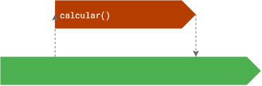
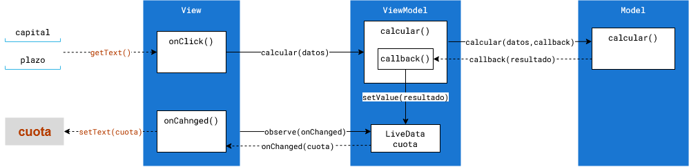

Model-View-ViewModel
Esta práctica es el primer comienzo con la arquitectura Model-View-ViewModel,
recomendada para desarrollar apps.
Exploraremos los beneficios que proporciona esta arquitectura, y los problemas que resuelve.
Usaremos las clases ViewModel y LiveData.
Desarrollaremos una app que consiste en una Calculadora de la cuota de hipoteca:
 https://github.com/gerardfp/mvvm
https://github.com/gerardfp/mvvm
Crea el proyecto
-
Selecciona Empty Activity como plantilla.
-
Añade las dependencias para el soporte ViewModel y LiveData; también para Navigation.
build.gradle (Module: app)
implementation 'androidx.lifecycle:lifecycle-viewmodel:2.2.0'
implementation 'androidx.lifecycle:lifecycle-livedata:2.2.0'
implementation 'androidx.navigation:navigation-fragment:2.3.0'
implementation 'androidx.navigation:navigation-ui:2.3.0'
-
Activa el ViewBinding
build.gradle (Module: app)
android {
buildFeatures {
viewBinding true
}
}
-
Crea el Grafo de Navegación res/navigation/nav_graph.xml.
Añade el NavHostFragment al layout de la MainActivity:
res/layout/activity_main.xml
<?xml version="1.0" encoding="utf-8"?>
<androidx.constraintlayout.widget.ConstraintLayout xmlns:android="http://schemas.android.com/apk/res/android"
android:layout_width="match_parent"
android:layout_height="match_parent"
xmlns:app="http://schemas.android.com/apk/res-auto">
<androidx.fragment.app.FragmentContainerView
android:name="androidx.navigation.fragment.NavHostFragment"
android:id="@+id/nav_host_fragment"
android:layout_width="match_parent"
android:layout_height="match_parent"
app:defaultNavHost="true"
app:navGraph="@navigation/nav_graph" />
</androidx.constraintlayout.widget.ConstraintLayout>
-
Crea un destino en el nav_graph.xmlllamado MiHipotecaFragment:
Configura el ViewBinding:
MiHipotecaFragment.java
import android.os.Bundle;
import android.view.LayoutInflater;
import android.view.View;
import android.view.ViewGroup;
import androidx.annotation.NonNull;
import androidx.fragment.app.Fragment;
public class MiHipotecaFragment extends Fragment {
private FragmentMiHipotecaBinding binding;
@Override
public View onCreateView(@NonNull LayoutInflater inflater, ViewGroup container, Bundle savedInstanceState) {
return (binding = FragmentMiHipotecaBinding.inflate(inflater, container, false)).getRoot();
}
@Override
public void onViewCreated(@NonNull View view, @Nullable Bundle savedInstanceState) {
super.onViewCreated(view, savedInstanceState);
}
}
Añade las siguientes View al layout:
res/layout/fragment_mi_hipoteca.xml
<?xml version="1.0" encoding="utf-8"?>
<LinearLayout xmlns:android="http://schemas.android.com/apk/res/android"
android:layout_width="match_parent"
android:layout_height="match_parent"
android:orientation="vertical">
<EditText
android:id="@+id/capital"
android:layout_width="match_parent"
android:layout_height="wrap_content"
android:hint="Capital"/>
<EditText
android:id="@+id/plazo"
android:layout_width="match_parent"
android:layout_height="wrap_content"
android:hint="Plazo"/>
<Button
android:id="@+id/calcular"
android:layout_width="match_parent"
android:layout_height="wrap_content"
android:text="Calcular cuota mensual"/>
<TextView
android:id="@+id/cuota"
android:layout_width="match_parent"
android:layout_height="wrap_content"/>
</LinearLayout>

Simulador Hipoteca
La app que vamos a desarrollar consiste en que el usuario introduce el capital que solicita
y el plazo de devolución y la app determina el interés y calcula
la cuota mensual por el método francés.
La siguiente clase SimuladorHipoteca implementa esta funcionalidad base de la aplicación.
La clase SimuladorHipoteca tiene el método calcular que recibe como parámetro un objeto Solicitud
con los campos capital y plazo solicitados, y calcula la cuota en función de un interés determinado.
Para esta demo se establece un interes arbitrario de 0.01605. Se ha añadido una pausa (sleep()) para
simular la obtención del interés mediante una operación de larga duración, como el acceso a base de datos, a un servidor, etc.
Crea esta clase:
SimuladorHipoteca.java
public class SimuladorHipoteca {
public static class Solicitud {
public double capital;
public int plazo;
public Solicitud(double capital, int plazo) {
this.capital = capital;
this.plazo = plazo;
}
}
public double calcular(Solicitud solicitud) {
double interes = 0;
try {
Thread.sleep(10000); // simular operacion de larga duracion (10s)
interes = 0.01605;
} catch (InterruptedException e) {}
return solicitud.capital*interes/12/(1-Math.pow(1+(interes/12),-solicitud.plazo*12));
}
}
En una aplicación típica de consola, estas dos clases se podrían utilizar así:
Scanner scanner = new Scanner(System.in);
SimuladorHipoteca simulador = new SimuladorHipoteca();
System.out.println("Introduzca el capital:");
double capital = scanner.nextDouble();
System.out.println("Introduzca el plazo:");
int plazo = scanner.nextInt();
SimuladorHipoteca.Solicitud solicitud = new SimuladorHipoteca.Solicitud(capital, plazo);
double cuota = simulador.calcular(solicitud);
System.out.println("Cuota: " + String.format("%.2f", cuota));
Introduzca el capital:
100000
Introduzca el plazo:
15
Cuota: 625.48
Bloqueos, pérdida de datos y Memory Leaks
Cuando se desarrolla un app Android, un error común es escribir todo el código en una Activity o Fragment.
Por ejemplo, en el método onViewCreated() de la clase MiHipotecaFragment podríamos estar
tentados a hacer lo siguiente:
MiHipotecaFragment.java / onViewCreated()
binding.calcular.setOnClickListener(new View.OnClickListener() {
@Override
public void onClick(View view) {
SimuladorHipoteca simuladorHipoteca = new SimuladorHipoteca();
double capital = Double.parseDouble(binding.capital.getText().toString());
int plazo = Integer.parseInt(binding.plazo.getText().toString());
SimuladorHipoteca.Solicitud solicitud = new SimuladorHipoteca.Solicitud(capital, plazo);
double cuota = simuladorHipoteca.calcular(solicitud);
binding.cuota.setText(String.format("%.2f",cuota));
}
});
La intención de este código es que cuando se hace click en el botón calcular, se obtienen el capital
y el plazo introducidos por el usuario, se llama al método calcular() del simulador y se muestra
la cuota obtenida.
Bloqueo
Si ejecutas la app, tal vez parezca que funciona correctamente. Sin embargo hay varios problemas.
El primero es que se ha bloqueado la Interfaz de Usuario (View) durante todo el tiempo que se ha estado
ejecutando el método calcular().

Debido al bloqueo de la UI, no habríamos podido mostrar, por ejemplo, una barra de progreso, o tal vez dar al usuario
la opción de cancelar la operación... Es más, si la operación tarda más de 5 segundos y el usuario trata de
interactuar entre tanto con la Interfaz de Usuario, el sistema Android le mostrará el infame diálogo de
"la aplicación
no responde".
No se deben realizar operaciones de larga duración en el thread de la Interfaz de Usuario.
Una solución que se utilitzó de forma bastante extendida durante algún tiempo fue el uso de la clase AsyncTask,
para ejecutar las tareas de larga duración en segundo plano. Solía ser más o menos así:
MiHipotecaFragment.java / onViewCreated()
binding.calcular.setOnClickListener(new View.OnClickListener() {
@Override
public void onClick(View view) {
double capital = Double.parseDouble(binding.capital.getText().toString());
int plazo = Integer.parseInt(binding.plazo.getText().toString());
SimuladorHipoteca.Solicitud solicitud = new SimuladorHipoteca.Solicitud(capital, plazo);
new AsyncTask<SimuladorHipoteca.Solicitud, Void, Double>(){
@Override
protected Double doInBackground(SimuladorHipoteca.Solicitud... solicitudes) {
SimuladorHipoteca simulador = new SimuladorHipoteca();
return simulador.calcular(solicitudes[0]);
}
@Override
protected void onPostExecute(Double cuota) {
super.onPostExecute(cuota);
binding.cuota.setText(String.format("%.2f",cuota));
}
}.execute(solicitud);
}
});
La intención de este código es ejecutar el método calcular() en una tarea en segundo plano, y actualizar el TextView con
la cuota obtenida cuando finalice la tarea.

De esta forma se previene el bloqueo de la interfaz de usuario. Si ejcutas ahora la app, verás que
la interfaz de usuario sigue respondiendo aún cuando se está ejecutando
la tarea de larga duración calcular().
Pero esta solución tampoco resuelve todos los problemas.
Pérdida de datos
Un comportamiento característico de Android es que cuando el usuario rota la pantalla del móvil, el sistema destruye
la Activity en ejecución, y crea una nueva con la nueva configuración de pantalla. Con esto, todas las
vistas (Fragments, widgets, etc.) agregadas y todas las variables
de la instancia Activity destruída también se pierden. Además, el layout de la Activity vuelve al punto
inicial, tal como está definido el xml.
Así que debido a esto, ninguna de las dos soluciones anteriores resuelve el problema de la pérdida de datos.
-
Sin AsyncTask: aunque la app haya sobrevivido al bloqueo y se haya conseguido mostrar la cuota en el
<TextView>, si el usuario luego rota el móvil, la cuota desaparece del <TextView>,
cuando Android destruye la Activity y crea una nueva.

-
Con AsyncTask: aunque la app no se haya bloqueado durante el cálculo, los datos se pierden igualmente si
el usuario rota la pantalla.

Debes considerar que la Interfaz de Usuario no te pertenece y que el sistema android puede hacer
con ella lo que le parezca oportuno.
Memory Leaks
Vamos ahora el caso de que el usuario rote la pantalla justo cuando se está realizando el cálculo.
Con el programa sin AsyncTask, el comportamiento de la app será errático, ya que Android, no
puede ni destruir la Activity ni crear una nueva hasta que haya finalizado la tarea calcular().

Con el programa con AsyncTask, ocurre lo siguiente: cuando se rota la pantalla en medio de la
ejecución de la AsyncTask, Android tratará de destruir la MainActivity en ejecución (hay que tener en cuenta que el fragment MiHipotecaFragment está dentro de
la MainActivity).
Sin embargo no podrá hacerlo ya que la AsyncTask mantiene una referencia a la variable binding.cuota que
pertenece a la MainActivity. Así que Android creará una nueva MainActivity sin haber podido destruir la anterior,
con lo cual esta quedará ocupando innecesariamente memoria ram del sistema. Esto es un Memory Leak.
Además, cuando finalice la AsyncTask, esta pondrá la cuota resultante en el TextView de la MainActivity
que debería haber sido destruida y que ha quedado perdida en la memoria, y por tanto, nunca se llegará a mostrar
en el TextView de la nueva MainActivity en ejecución.

No hay que mantener referencias a elementos de la Interfaz de Usuario en las tareas en segundo plano.
Para paliar estos problemas, han ido apareciendo de forma constante diferentes procedimientos que involucraban
AsyncTasks estáticas, WeakReferences, anulaciones de los métodos del ciclo de vida, etc, etc, todas ellas con sus
ventajas e inconvenientes. Actualmente, parece que la solución más aceptada es implementar la arquitectura MVVM
que veremos a continuación.
Arquitectura MVVM
La arquitectura Model-View-ViewModel se basa en el principio de Separación de intereses,
dividiendo el código de la app en tres categorías:
-
View: Se encarga de la interacción con el usuario.
-
Model: Se encarga de realizar las acciones sobre los datos.
-
ViewModel: Actúa de enlace entre el Model y el View.
Cuando la View ha de realizar alguna acción sobre los datos (cálculo, consulta, modificación, etc...) no lo
hace directamente sobre el Model, sino que usa el ViewModel como intermediario. El ViewModel traslada la acción al Model.
El Model responde al ViewModel con el resultado de la acción (datos o errores), y el ViewModel la transfiere de
vuelta a la View. En las apps Android implementaremos el ViewModel utilizando la clase AndroidViewModel.
El punto clave para el desacoplamiento de la View del resto de componentes de la app, y evitar así los problemas
vistos en el punto anterior, es que el ViewModel no traslada directamente el resultado de las acciones a la View,
sino que es la View la que observa el resultado. El mecanismo de observación implica que el ViewModel notifica el
resultado a la View, solo si la View está en ejecución. Para implementar la observación utilizaremos
la clase LiveData.

Así pues, la comunicación entre estos componentes suele ser así:
-
La View llama a métodos del ViewModel para realizar acciones sobre los datos,
y observa el LiveData para obtener el resultado.
-
El ViewModel traslada las acciones al Model mediante llamadas a métodos
(habitualmente en segundo plano), y guarda los datos resultantes en el LiveData.
-
El Model realiza las acciones sobre los datos y retorna el resultado al ViewModel
(con return o mediante callbacks).
Otro aspecto clave es que el ViewModel sobrevive a la rotación de pantalla, con lo cual los datos almacenados en el
ViewModel no se pierden cuando Android destruye la View y la vuelve a crear.

Implementación MVVM
Para implementar un ViewModel en Android hay que crear una clase y hacer que extienda de la clase AndroidViewModel.
En esta app llamaremos a esta clase MiHipotecaViewModel. En ella hacemos lo siguiente:
-
Declaramos la variable cuota de tipo Double envuelta en la clase MutableLiveData
(Mutable permite cambiar el valor de la variable).
-
En el constructor de la clase inicializamos el Model (SimuladorHipoteca) y el Executor (para ejecutar tareas en segundo plano).
-
Definimos el método calcular() que será llamado por la View, y que a su vez,
llama en segundo plano al método calcular() del Model.
Este método recibe los datos de la View (capital y plazo), y los transforma en un objeto
SimuladorHipoteca.Solicitud apto para enviar al Model.
Se llama en segundo plano al método calcular() del Model, y el resultado cuotaResultante se
guarda en la variable cuota (para cambiar el valor de un MutableLiveData
dentro de una tarea en segundo plano hay que utilizar el método postValue() ).
El código del ViewModel queda así:
MiHipotecaViewModel.java
public class MiHipotecaViewModel extends AndroidViewModel {
Executor executor;
SimuladorHipoteca simulador;
MutableLiveData<Double> cuota = new MutableLiveData<>();
public MiHipotecaViewModel(@NonNull Application application) {
super(application);
executor = Executors.newSingleThreadExecutor();
simulador = new SimuladorHipoteca();
}
public void calcular(double capital, int plazo) {
final SimuladorHipoteca.Solicitud solicitud = new SimuladorHipoteca.Solicitud(capital, plazo);
executor.execute(new Runnable() {
@Override
public void run() {
double cuotaResultante = simulador.calcular(solicitud);
cuota.postValue(cuotaResultante);
}
});
}
}
La View (MiHipotecaFragment) por su parte realiza lo siguiente:
-
Obtiene una instancia del MiHipotecaViewModel. Para obtener una instancia de un ViewModel se
utiliza ViewModelProvider pasándole la clase .class del ViewModel que se desea obtener.
-
Cuando el usuario hace click el botón, se obtienen los datos introducidos y se llama al ViewModel para
que ejecute la acción calcular() con esos datos.
-
Se observa la variable cuota (el LiveData) del ViewModel. Cuando el valor de la variable
cuota cambie (es decir, se establezca el resultado), el LiveData llamará al método onChanged(),
notificando en el parámetro cuota el valor de la variable. Lo único que se hace es establecer este
valor en el <TextView>.
MiHipotecaFragment.java
public class MiHipotecaFragment extends Fragment {
private FragmentMiHipotecaBinding binding;
@Override
public View onCreateView(@NonNull LayoutInflater inflater, ViewGroup container, Bundle savedInstanceState) {
return (binding = FragmentMiHipotecaBinding.inflate(inflater, container, false)).getRoot();
}
@Override
public void onViewCreated(@NonNull View view, @Nullable Bundle savedInstanceState) {
super.onViewCreated(view, savedInstanceState);
final MiHipotecaViewModel miHipotecaViewModel = new ViewModelProvider(this).get(MiHipotecaViewModel.class);
binding.calcular.setOnClickListener(new View.OnClickListener() {
@Override
public void onClick(View view) {
double capital = Double.parseDouble(binding.capital.getText().toString());
int plazo = Integer.parseInt(binding.plazo.getText().toString());
miHipotecaViewModel.calcular(capital, plazo);
}
});
miHipotecaViewModel.cuota.observe(getViewLifecycleOwner(), new Observer<Double>() {
@Override
public void onChanged(Double cuota) {
binding.cuota.setText(String.format("%.2f",cuota));
}
});
}
}
El siguiente diagrama ilustra la comunicación entre los 3 componentes de la app:

La clave de porqué el ViewModel resuelve el problema de la rotación de pantalla está en el
parámetro getViewLifecycleOwner() pasado al método observe, que asegura que la notificación del
resultado (mediante la llamada a onChanged()), solo se efectuará si la View (el fragment) todavía está
en ejecución cuando se obtenga el resultado.
Supongamos que el usuario pulsa el botón de calcular con el móvil en vertical, y mientras se está efectuando
el cálculo rota el móvil. El fragment que originalmente realizó la acción calcular() y observaba el
resultado ya no estará en ejecución y no será notificado del resultado. Sin embargo el nuevo fragment que se
ha creado y que también observa el resultado sí será notificado.

Callbacks
El mecanismo de callback consiste en que cuando se llama a un método se le pasa
un objeto en el que están definidos los métodos a los que tiene que llamar para devolver el resultado.
En los métodos de ese objeto se define qué hacer con el resultado.
El siguiente ejemplo muestra la similitud entre devolver datos con return y hacerlo mediante callbacks.
class EjemploCallback {
public void main(){
int resultado = metodoConReturn(10000);
System.out.println(resultado);
metodoConCallback(10000, new Callback() {
@Override
public void alRetornar(int resultado) {
System.out.println(resultado);
}
});
}
// return
int metodoConReturn(int datos){
int r = datos*datos;
return r;
}
// callback
interface Callback {
void alRetornar(int resultado);
}
void metodoConCallback(int datos, Callback callback){
int r = datos*datos;
callback.alRetornar(datos*datos);
}
}
La comunicación entre el ViewModel y el Model se realiza mediante llamadas y llamadas de vuelta (callbacks).
En las llamadas de vuelta, se informa del resultado y también del progreso y los errores.
El ViewModel se los notifica a la Vista mediante variables LiveData.
Cambia la clase SimuladorHipoteca para que comunique el resultado mediante un callback:
SimuladorHipoteca.java
public class SimuladorHipoteca {
public static class Solicitud {
public double capital;
public int plazo;
public Solicitud(double capital, int plazo) {
this.capital = capital;
this.plazo = plazo;
}
}
interface Callback {
void cuandoEsteCalculadaLaCuota(double cuota);
}
public void calcular(Solicitud solicitud, Callback callback) {
double interes = 0;
try {
Thread.sleep(2500); // long run operation
interes = 0.01605;
} catch (InterruptedException e) {}
callback.cuandoEsteCalculadaLaCuota(solicitud.capital*interes/12/(1-Math.pow(1+(interes/12),-solicitud.plazo*12)));
}
}
Cambia el ViewModel para que reciba en un callback la cuota resultante:
public class MiHipotecaViewModel extends AndroidViewModel {
Executor executor;
SimuladorHipoteca simulador;
MutableLiveData<Double> cuota = new MutableLiveData<>();
public MiHipotecaViewModel(@NonNull Application application) {
super(application);
executor = Executors.newSingleThreadExecutor();
simulador = new SimuladorHipoteca();
}
public void calcular(double capital, int plazo) {
final SimuladorHipoteca.Solicitud solicitud = new SimuladorHipoteca.Solicitud(capital, plazo);
executor.execute(new Runnable() {
@Override
public void run() {
simulador.calcular(solicitud, new SimuladorHipoteca.Callback() {
@Override
public void cuandoEsteCalculadaLaCuota(double cuotaResultante) {
cuota.postValue(cuotaResultante);
}
});
}
});
}
}
Puede parecer que el mecanismo de callback no aporta nada respecto al return, pero en los
siguientes apartados veremos que ofrece más versatilidad, ya que en el callback se pueden definir distintos
métodos no solo para tratar el resultado, sino también los errores y el proceso.
Desde una aplicación típica de consola, el SimuladorHipoteca versión callback se podría
utilizar así:
import java.util.Scanner;
class SimuladorHipoteca {
public static class Solicitud {
public double capital;
public int plazo;
public Solicitud(double capital, int plazo) {
this.capital = capital;
this.plazo = plazo;
}
}
interface Callback {
void cuandoEsteCalculadaLaCuota(double cuota);
}
public void calcular(Solicitud solicitud, Callback callback) {
double interes = 0;
try {
Thread.sleep(2500); // long run operation
interes = 0.01605;
} catch (InterruptedException e) {}
double cuota = solicitud.capital*interes/12/(1-Math.pow(1+(interes/12),-solicitud.plazo*12));
callback.cuandoEsteCalculadaLaCuota(cuota);
}
}
public class Main {
public static void main(String[] args) {
Scanner scanner = new Scanner(System.in);
SimuladorHipoteca simulador = new SimuladorHipoteca();
System.out.println("Introduzca el capital:");
double capital = scanner.nextDouble();
System.out.println("Introduzca el plazo:");
int plazo = scanner.nextInt();
SimuladorHipoteca.Solicitud solicitud = new SimuladorHipoteca.Solicitud(capital, plazo);
simulador.calcular(solicitud, new SimuladorHipoteca.Callback() {
@Override
public void cuandoEsteCalculadaLaCuota(double cuota) {
System.out.println("Cuota: " + String.format("%.2f", cuota));
}
});
}
}
Gestión de errores
Vamos a suponer que el SimuladorHipoteca además de detrminar el interés, también establece un capital mínimo y
un plazo mínimo (estos valores se podrían sacar del servidor de un banco, por ejemplo).
Ahora, cuando se llame al método calcular() del simulador, en lugar de informar únicamente
cuando esté calculada la cuota,
debe informar de los errores cuando el capital o el plazo solicitados sean inferiores a los valores
mínimos. Solo en caso de que sean válidos debe calcular la cuota y notificarla.
Para ello, añadiremos dos métodos en el callback, que además de decir si el capital o plazo son inferiores
al mínimo, informarán de cuales son esos mínimos en cada caso.
SimuladorHipoteca.java
public class SimuladorHipoteca {
public static class Solicitud {
public double capital;
public int plazo;
public Solicitud(double capital, int plazo) {
this.capital = capital;
this.plazo = plazo;
}
}
interface Callback {
void cuandoEsteCalculadaLaCuota(double cuota);
void cuandoHayaErrorDeCapitalInferiorAlMinimo(double capitalMinimo);
void cuandoHayaErrorDePlazoInferiorAlMinimo(int plazoMinimo);
}
public void calcular(Solicitud solicitud, Callback callback) {
double interes = 0;
double capitalMinimo = 0;
int plazoMinimo = 0;
try {
Thread.sleep(2500); // long run operation
interes = 0.01605;
capitalMinimo = 1000;
plazoMinimo = 2;
} catch (InterruptedException e) {}
boolean error = false;
if (solicitud.capital < capitalMinimo) {
callback.cuandoHayaErrorDeCapitalInferiorAlMinimo(capitalMinimo);
error = true;
}
if (solicitud.plazo < plazoMinimo) {
callback.cuandoHayaErrorDePlazoInferiorAlMinimo(plazoMinimo);
error = true;
}
if(!error) {
callback.cuandoEsteCalculadaLaCuota(solicitud.capital * interes / 12 / (1 - Math.pow(1 + (interes / 12), -solicitud.plazo * 12)));
}
}
}
Por su parte, el ViewModel cuando llama al método calcular() del Model, define en el callback lo que hay que hacer
cuando ocurran estos errores. Obviamente, tiene que informar a la View para que los muestre al usuario.
Para comunicarse con la View, el ViewModel usa variables LiveData, así que definiremos dos variables para informar
a la View si hay un error en el capital y/o en el plazo.
Estas variables serán de clase Double para el capital y de clase Integer para el plazo.
Si el valor de estas variables es null, la View entenderá que no ha habido un error, y en caso contrario
el valor de estas variables será el valor mínimo que permite el banco para el capital y plazo. Así que cuando
el Model notifique que se ha calculado el resultado, las pondremos a null (no ha habido error), y cuando notifique
los errores pondremos el valor mínimo que nos pase.
MiHipotecaViewModel.java
public class MiHipotecaViewModel extends AndroidViewModel {
Executor executor;
SimuladorHipoteca simulador;
MutableLiveData<Double> cuota = new MutableLiveData<>();
MutableLiveData<Double> errorCapital = new MutableLiveData<>();
MutableLiveData<Integer> errorPlazos = new MutableLiveData<>();
public MiHipotecaViewModel(@NonNull Application application) {
super(application);
executor = Executors.newSingleThreadExecutor();
simulador = new SimuladorHipoteca();
}
public void calcular(double capital, int plazo) {
final SimuladorHipoteca.Solicitud solicitud = new SimuladorHipoteca.Solicitud(capital, plazo);
executor.execute(new Runnable() {
@Override
public void run() {
simulador.calcular(solicitud, new SimuladorHipoteca.Callback() {
@Override
public void cuandoEsteCalculadaLaCuota(double cuotaResultante) {
errorCapital.postValue(null);
errorPlazos.postValue(null);
cuota.postValue(cuotaResultante);
}
@Override
public void cuandoHayaErrorDeCapitalInferiorAlMinimo(double capitalMinimo) {
errorCapital.postValue(capitalMinimo);
}
@Override
public void cuandoHayaErrorDePlazoInferiorAlMinimo(int plazoMinimo) {
errorPlazos.postValue(plazoMinimo);
}
});
}
});
}
}
Por último la View solo tiene que observar las LiveData de los errores y mostrárselos u ocultárselos al usuario:
MiHipotecaFragment.java
miHipotecaViewModel.errorCapital.observe(getViewLifecycleOwner(), new Observer<Double>() {
@Override
public void onChanged(Double capitalMinimo) {
if (capitalMinimo != null) {
binding.capital.setError("El capital no puede ser inferor a " + capitalMinimo + " euros");
} else {
binding.capital.setError(null);
}
}
});
miHipotecaViewModel.errorPlazos.observe(getViewLifecycleOwner(), new Observer<Integer>() {
@Override
public void onChanged(Integer plazoMinimo) {
if (plazoMinimo != null) {
binding.plazo.setError("El plazo no puede ser inferior a " + plazoMinimo + " años");
} else {
binding.plazo.setError(null);
}
}
});
Un error que sí puede gestionar la vista es que los datos introducidos sean del tipo correcto:
binding.calcular.setOnClickListener(new View.OnClickListener() {
@Override
public void onClick(View view) {
boolean error = false;
double capital = 0;
int plazo = 0;
try {
capital = Double.parseDouble(binding.capital.getText().toString());
} catch (Exception e){
binding.capital.setError("Introduzca un número");
error = true;
}
try {
plazo = Integer.parseInt(binding.plazo.getText().toString());
} catch (Exception e){
binding.plazo.setError("Introduzca un número");
error = true;
}
if (!error) {
miHipotecaViewModel.calcular(capital, plazo);
}
}
});
Progreso
Añadiremos a la Vista una ProgressBar circular para indicar al usuario que se está calculando la cuota.
Sustituye el <TextView> de la cuota por este <FrameLayout>, que incluye la cuota y una
<ProgressBar> (el FrameLayout hará que estén superpuestos):
res/layout/fragment_mi_hipoteca.xml
<FrameLayout
android:layout_width="match_parent"
android:layout_height="wrap_content">
<TextView
android:id="@+id/cuota"
android:layout_width="match_parent"
android:layout_height="wrap_content"
android:textSize="48sp"
android:gravity="center"/>
<ProgressBar
android:id="@+id/calculando"
android:layout_width="match_parent"
android:layout_height="match_parent"
android:visibility="gone"
android:gravity="center"/>
</FrameLayout>
Observa que el ProgressBar tiene el atributo android:visibility="gone" que hará que
no se muestre. Lo mostraremos y volveremos a ocultar des de el código Java cuando sea conveniente.
Añadimos dos métodos al Callback, uno para notificar cuándo empieza el cálculo y otro para cuando finaliza.
El Model notificará al Viewmodel llamando a estos métodos al principio y al final del método calcular():
SimuladorHipoteca.java
interface Callback {
// resto de métodos
void cuandoEmpieceElCalculo();
void cuandoFinaliceElCalculo();
}
public void calcular(Solicitud solicitud, Callback callback) {
callback.cuandoEmpieceElCalculo();
// resto de sentencias
callback.cuandoFinaliceElCalculo();
}
El ViewModel utilizará una variable LiveData para comunicar a la View de cuándo ha empezado y
finalizado el cálculo.
Pondrá en ella el valor true o false, segun le notifique el Model:
MiHipotecaViewModel.java
// ...
MutableLiveData<Boolean> calculando = new MutableLiveData<>();
// ...
@Override
public void cuandoEmpieceElCalculo() {
calculando.postValue(true);
}
@Override
public void cuandoFinaliceElCalculo() {
calculando.postValue(false);
}
La View alternará entre mostrar/ocultar el ProgressBar y el TextView acorde al valor que observe
en la variable:
MiHipotecaFragment.java
miHipotecaViewModel.calculando.observe(getViewLifecycleOwner(), new Observer<Boolean>() {
@Override
public void onChanged(Boolean calculando) {
if (calculando) {
binding.calculando.setVisibility(View.VISIBLE);
binding.cuota.setVisibility(View.GONE);
} else {
binding.calculando.setVisibility(View.GONE);
binding.cuota.setVisibility(View.VISIBLE);
}
}
});
Práctica
Implementa una Vista que realice una acción sobre un Modelo.
La Vista tiene que obtener datos del usuario, y el Modelo tiene que usarlos para realizar la acción.
El Modelo debe imponer algún tipo de restricción sobre los datos.
La Vista debe mostrar el resultado de la acción, y notificar de los errores y el progreso.